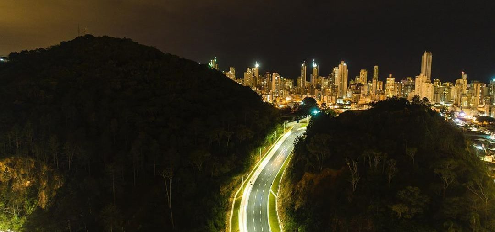

Mobilidade
Se achar em Balneário não é dificil, principalmente no centro, já que o mesmo possui cinco avenidas em paralelo, o que torna bem facíl se locomover de uma para outra, já que basta pegar a primeira transversal que você já chega na próxima avenida tranquilamente, o unico problema, é na temporada de fim de ano, onde a cidade fica extremamente cheia e consequentemente o trânsito fica mais lento, portanto, se você pretende passar suas férias de fim de ano na cidade, esteja ciente que a locomoção provavélmente será um pouco complicada.